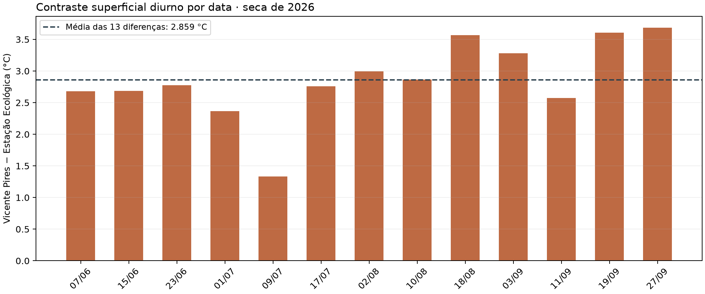

Temperatura de superfície
Landsat 8/9 Collection 2 Level-2; 38 cenas adquiridas, com 13 cenas completas da seca utilizadas nas referências. QA local em seis áreas; térmico nativo de 100 m distribuído a 30 m.
Relatório metodológico
O diagnóstico relaciona condições climáticas, processos da água e contexto social à rede de infraestrutura verde da Bacia do Paranoá.
A análise reúne observações do INMET, temperatura de superfície Landsat e parâmetros de cobertura e morfologia urbana para preparar a estimativa de resfriamento pelo InVEST.
Período chuvoso observado: 01/10/2025–30/04/2026. Período seco: 01/05–30/09/2026. A preparação do InVEST utiliza a seca; a comparação com a chuva caracteriza os dados disponíveis.
Selecione uma estação e uma variável. Cada ponto diário resume observações locais; os gráficos preservam lacunas e identificam a quantidade de dados utilizada.
Carregando observações…
A001: fonte da ETo. A045: fonte de Tref. A046 e A047 integram a exploração comparativa.
As barras de chuva usam somente dias com 24 intervalos válidos. Uma lacuna não significa ausência de chuva.
As caixas mostram mediana e quartis; a linha tracejada indica a média. São distribuições dos dias observados, não intervalos de confiança.
Linhas: média das leituras válidas de cada hora. Faixas: percentis 25 e 75. O ciclo não representa um dia específico.
Cada ponto utiliza pelo menos 20 pares horários válidos de temperatura e umidade do mesmo dia. Associação não demonstra causalidade.
As faixas do Sankey contam dias por combinação, sem representar deslocamento ou sequência temporal. Como os períodos têm durações diferentes, os detalhes apresentam contagem e percentual dos dias pareados válidos de cada período.
| Período | Temperatura média | Umidade média | Chuva nos dias completos | Dias pareados / esperados |
|---|
Horário UTC convertido para UTC−03. Temperatura, umidade e vento: pelo menos 20 leituras válidas no dia. Precipitação: soma de 24 intervalos horários válidos, atribuídos à data do intervalo anterior. Temperatura e umidade do Sankey e da dispersão usam as mesmas horas pareadas, com mínimo de 20 pares.
Valores ausentes ou fora dos limites de consistência são mantidos como ausência. Não houve imputação. Os totais de chuva se referem apenas aos dias completos, sem estimar a precipitação das lacunas. Um ciclo observado não constitui normal climatológica.
Baixar série diária e contagens (CSV) · Consultar dados e fontes dos gráficos · Metodologia da exploração.
Landsat 8/9 Collection 2 Level-2; 38 cenas adquiridas, com 13 cenas completas da seca utilizadas nas referências. QA local em seis áreas; térmico nativo de 100 m distribuído a 30 m.
A045: 25,1559 °C no dia e 17,8101 °C na noite, em 147 datas pareadas. Contraste superficial UHI: 2,8594 °C. A transferência diurna para a noite é uma hipótese.
ETo FAO56 da A001: 3,9480 mm/dia, média de 152 dias. Raster uniforme; Kc introduz a variação espacial do componente ETI.
Tabela de doze classes, com vias pavimentadas e três níveis de intensidade construída. Ocupação horizontal e altura normalizada combinadas em vizinhanças de 500 × 500 m.
Consultar tabela biofísica, referência de Hu e procedimento completo do InVEST · Referências utilizadas.




Execuções da cobertura atual ainda não realizadas. Este espaço receberá capacidade de resfriamento, mitigação térmica e temperatura do ar para dia e noite, seguidas da análise nos 46.876 fragmentos.
Os parâmetros e mapas de preparação acima são entradas do modelo. As distâncias de resfriamento e mistura da próxima execução permanecem a confirmar.
As saídas da rodada v6 e as extrações anteriores usam cobertura e população de fragmentos diferentes. Não são resultados da base atual. A média aritmética de dia e noite é um cenário sintético, não temperatura observada de 24 horas.
Mapas e procedimentos históricos · Ficha da rodada histórica.
Os processos de inundação são analisados pelo fluxo de Momentos da Água. O modelo de resfriamento urbano não calcula profundidade de inundação.
O indicador e as extrações apresentados nesta seção pertencem ao diagnóstico anterior. Sua atualização na base atual de 46.876 fragmentos exige revisão das entradas hidrológicas e novos cruzamentos.
A profundidade de inundação é produzida na modelagem hidrológica usada no fluxo de Momentos da Água. O diagnóstico de riscos consulta o cenário de chuva com tempo de retorno de cinco anos.
No Paranoá: é usado o raster hidrológico TR5. O sistema registra a profundidade média e máxima em cada fragmento e classifica pelo máximo.
Como interpretar: O mapa é uma estimativa exploratória. TR5 se refere à chuva de projeto; não significa que a cheia ocorrerá exatamente a cada cinco anos.
Veja a camada de entrada ou o resultado por fragmento. Aproxime para explorar a distribuição espacial. Nas variáveis numéricas, alterne entre degradê e classes; as faixas da entrada são cartográficas e as classes por fragmento são as registradas no diagnóstico.
O mapa será carregado ao abrir esta parte do procedimento.
Use + e −, o gesto de pinça ou o teclado para aproximar; arraste para navegar. A troca de visualização mantém posição e zoom. As imagens têm resolução reduzida; ampliar não acrescenta detalhe.
Consultar este indicador no mapa interativo geral · Dados e representação.
A modelagem usa terreno, drenagem derivada, uso do solo, grupos hidrológicos de solo, parâmetros de escoamento e chuvas de projeto. Na implementação consultada, a chuva gera excesso pelo método SCS-CN; hidrogramas são propagados pela rede, e curvas de vazão e nível associadas ao HAND permitem estimar profundidades.
O registro da execução 1.1.1 informa grade hidrológica de 20 m, durações de chuva de 60, 180, 360, 720 e 1.440 minutos e passo de cinco minutos. Para cada trecho, é retido o maior pico entre durações. O diagnóstico usa inundacao_profundidade_TR5_hidro.tif, sem substituir esse produto pela versão de visualização.
O fluxo produz cenários de inundação e utiliza informação hidrológica na avaliação dos momentos. A profundidade não é calculada a partir dos rótulos finais fonte, condução e acomodação. Ver o processo de Momentos da Água.
A execução não foi calibrada com vazões ou observações independentes de inundação. Não simula a operação do Lago Paranoá, pontes, bueiros, batimetria e remanso. Zonas sem estimativa válida devem permanecer sem dados. A envoltória de máximos por trecho não descreve uma única cheia simultânea.
Consultar parâmetros e registros hidrológicos · Consultar classificação por fragmento
Contexto socioeconômico e pressão de edificações ajudam a interpretar a exposição e as possibilidades de atuação nos fragmentos.
As extrações disponíveis pertencem ao diagnóstico anterior. A atualização exige cruzar as bases com os fragmentos atuais; identificadores antigos e atuais não são equivalentes.
Expressa quanto da área do fragmento é ocupado por polígonos de edificações.
O percentual representa ocupação espacial. É um cálculo geométrico do diagnóstico, independente da intensidade construtiva usada na tabela biofísica do InVEST.
Veja a camada de entrada ou o resultado por fragmento. Aproxime para explorar a distribuição espacial. Nas variáveis numéricas, alterne entre degradê e classes; as faixas da entrada são cartográficas e as classes por fragmento são as registradas no diagnóstico.
A entrada mostra a localização das edificações. O percentual de ocupação e suas classes aparecem em Resultado por fragmento.
O mapa será carregado ao abrir esta parte do procedimento.
Use + e −, o gesto de pinça ou o teclado para aproximar; arraste para navegar. A troca de visualização mantém posição e zoom. As imagens têm resolução reduzida; ampliar não acrescenta detalhe.
Consultar este indicador no mapa interativo geral · Dados e representação.
A camada de entrada é Construções Bacia do Paranoá.shp. Os recortes são unidos para contar sobreposições uma vez. Calcula-se 100 × área ocupada / área do fragmento.
Inexistente em 0%; baixa acima de zero até um terço; média acima de um terço até dois terços; alta acima de dois terços. A fonte primária da camada de edificações permanece a documentar.
Situa o fragmento no contexto socioeconômico do setor censitário com maior sobreposição.
O valor caracteriza o setor selecionado; não estima a renda de pessoas que utilizam o fragmento.
Veja a camada de entrada ou o resultado por fragmento. Aproxime para explorar a distribuição espacial. Nas variáveis numéricas, alterne entre degradê e classes; as faixas da entrada são cartográficas e as classes por fragmento são as registradas no diagnóstico.
A entrada representa o rendimento por setor censitário; o resultado associa ao fragmento o setor de maior sobreposição. As faixas usam o salário mínimo de R$ 1.212, referência de 2022.
O mapa será carregado ao abrir esta parte do procedimento.
Use + e −, o gesto de pinça ou o teclado para aproximar; arraste para navegar. A troca de visualização mantém posição e zoom. As imagens têm resolução reduzida; ampliar não acrescenta detalhe.
Consultar este indicador no mapa interativo geral · Dados e representação.
São usados os setores do Censo 2022 e o campo V06004, com rendimento médio dos responsáveis pelo domicílio com renda. O diagnóstico registra o setor de maior sobreposição e sua proporção de área. A referência de salário mínimo é R$ 1.212, correspondente a 2022.
As classes são até 1, acima de 1 até 3, acima de 3 até 6, acima de 6 até 9 e acima de 9 salários mínimos. Valores ausentes ou suprimidos permanecem sem dados. Este indicador não depende dos parâmetros do InVEST.